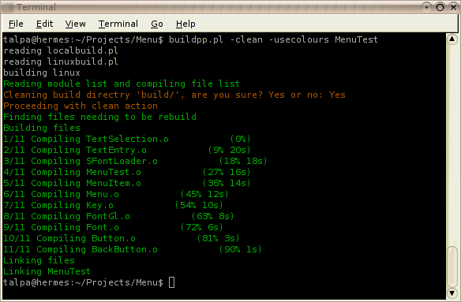

BuildPP homepage

News
2004-03-02 First SF birthday passed. New postProcessing and autoProcessing available in CVS,
As usual see the manual for further information.
2004-09-28 Multi threaded building see option -j, now you can use your multi CPU machine.
Building using distcc see option -distcc, now
you can distribute the build process across multiple computers.
New file release V1 RC3
2004-08-25 Using Getopt to read options and arguments, enabling the definition of custom options like
-cross or -debug. See manual for more details.
2004-06-27 Minor change readConfigFile now dies if there is an error in the file, previously it just continued without a single warning. New file release V1 RC2
2004-06-25 Added $lazyLinking variable and //#lazylinking on/off, allowing you not to specify the //#link comments.
See the manual for further information.
2004-05-02 Added progress information when compiling, its a first step towards distributed compiling (it now
generates a list of all files that need to be compiled).
2004-03-15 Added an autoTarget function (works under linux(tested on Debian)
and windows(most likely just Cygwin)) and a tiny test project demonstrating buildpp, also the manual has been updated.
2004-02-23 Web page created.
Getting buildpp
Use the following line in your shell to get the latest version of buildpp or simply get a file release.
cvs -z3 -d :pserver:anonymous@cvs.sf.net:/cvsroot/buildpp checkout buildpp
Manual
Here is a link to the HTML documentation generated by the source in CVS.
I will try to keep it up to date with the CVS source:
buildpp manual
Installation
Not really need it is just a perl script, copy it somewhere convenient...
Distribute it with your source, stand on your head, make strange noises, or:
cd to the buildpp directory.
type make install.
The "make install" copies the buildpp.pl to /usr/bin/ using cp
As such it probably just works under Unix/Linux like environments. If it should fail, you may copy the file manually
to somewhere in you path.
I recently tried "make install" under cygwin, and it succeed, your mileage may vary...
If you just type make it will additionally try to build the manual pages for buildpp,
this requires yodl2man and yodl2html part of the yodl package.Note: the manual pages are currently not installed as they are incomplete.
If you type make test instead of make install it will try
to build a dummy program using buildpp, this additionally requires gcc
Tips
Under Windows I strongly recommend using Cygwin as it provides a Linux likeenvironment, including perl and a decent shell.
And if you are developing non GPL things MinGW as the compiler, other compilers
are usable as well, but MinGW is free.
Future features (planed ones)
- Write a better manual.
- Warnings when two files with the same name is detected.
- Path exclusion option for the modulelist.
- "Clock skew" detection (files from the future).
- Fix the -j2 link crash on MacOSX.
Support BuildPP
I really would like to know if anyone besides me, my friends and the guys at work uses buildpp.
I will continue the develop buildpp even if no one but myself used buildpp,
however I probably won't get around
writing a nicer manual if no one finds buildpp the least bit interesting.
You don't have to send me any money (no one should pay money for such a small piece of software
(not that I would mind getting money :) ).
So just send me an e-mail if you use buildpp, not that you are forced to.
I you want I will include a link to your project at the bottom of this page.
Projects using BuildPP
- SENTINEL PaperScan paper quality control software, the development of buildpp actually started here when a problem was encountered with make and lots of .o files
(only under windows)
- My masters a Physics engine.
- PeguinFight a playable clone of an old C64 game called DogFight.
- A OpenGL Menu library derived from PenguinFight.